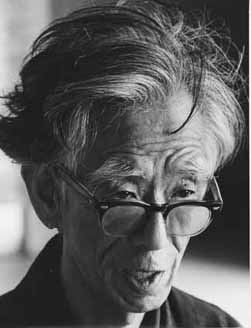
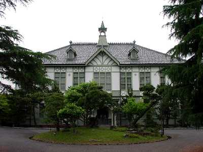

記念講演
記念講演
| 岡潔生誕百年記念多変数複素解析国際会議 京都／奈良 ２００１ |
奈良プログラム
[ English | Japanese ]
 |
共催 ： 奈良女子大学 | |
| 日時 ： 平成１３年１１月６日（火）～８日（木） | ||
| 場所 ： 奈良女子大学記念館 | ||
| 以下の企画をとりおこないます。
奈良プログラムは参加登録の必要はありません。 どなたでも御自由に御参加下さい（参加費無料）。 |
 記念講演
記念講演
| １１月７日（水） 《一般向け講演会》 （日本語） | |||
|
10:00 - 11:00
|
西野 利雄 （九州大学名誉教授） | ||
| 岡先生の数学 ―― その背後にあるもの | |||
|
11:15 - 12:15
|
志賀 弘典 （千葉大学教授） | ||
| 数学の技法としての本歌取り ―― 私的岡潔体験 | |||
|
14:00 - 15:00
|
森本 徹 （奈良女子大学教授） | ||
| 数学の流れと出会い ―― 岡潔とクリフォードの定理 | |||
| １１月８日（木） 《学術講演会》 （英語） | |||
|
10:00 - 11:00
|
ピエール・ドルボー （パリ第Ⅵ大学名誉教授，フランス）
Pierre Dolbeault (Univ. Paris VI, France) |
||
| 岡潔の仕事の影響
On the Influence of Oka's Work |
|||
|
11:15 - 12:15
|
ジョン・ワーマー （ブラウン大学名誉教授，アメリカ）
John Wermer (Brown Univ., U.S.A.) |
||
| 解析的多様体の境界について
Boundaries of the Analytic Varieties |
|||
|
Remmert 先生は、残念ながら、来日されないことになりました。
|
|||
|
|
| 岡潔博士の御遺族から寄贈された遺稿資料を記念館に展示します。
主なものは次の通りです。 |
| ・ 第Ⅶ論文（内分岐域での上空移行の確立）ができるまでの資料
・ 高木先生，ベーンケ，カルタン，ベイユ，トム等からの手紙やはがき ・ 奈良女子大学での講義ノート ・ 愛読書 ・ 日記 ・ 岡先生の書かれた本およびエッセイ（６０～７０年代に広く読まれたもの） ・ 岡先生の書（色紙等） ・ 写真 |
|
|
| 「岡潔博士と秋月康夫博士の対談フィルム」（ＮＨＫ，１９６５年）を上映します。
上映開始時間は両日の |
|
|
| で、上映時間は１回約３０分です。 |
| １１月６日（火）～８日（木）
午前９時～午後４時 の記念館開館中、記念館内に
設置されたパソコンのインターネットで「岡潔文庫」を自由にご覧になれます。 |

奈良女子大学記念館 （国の重要文化財）
| 奈良女子大学 | 奈良市北魚屋西町 | |
| 近鉄奈良駅から徒歩５分
ＪＲ奈良駅から近鉄奈良駅までは市内循環バス（外回り）を利用 |